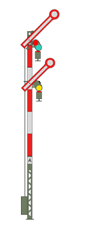
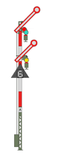

|
|
| You are approaching the Exit Signal of Langeland Station. It can show one of three different Aspects: |
 Stop.
Stop before the Signal and wait for a Proceed Aspect. You should
now be travelling at approximately 40km/h
in order to make a timely halt without going past the Signal.
As necessary, adjust the Braking Force(Braking Force increase, Braking Force reduction) Stop.
Stop before the Signal and wait for a Proceed Aspect. You should
now be travelling at approximately 40km/h
in order to make a timely halt without going past the Signal.
As necessary, adjust the Braking Force(Braking Force increase, Braking Force reduction) |
 Proceed at Reduced Speed of 40km/h.Drive at a maximum speed of 40km/h from the Signal until the entire Train is on the Open Line. (Your Train is 150m long.) Subsequently you may accelerate to Line Speed (in this case 80km/h). |
 Proceed at Reduced Speed of 60km/h, indicated by the white illuminated digit 6.Drive at a maximum speed of 60km/h from the Signal until the entire Train is on the Open Line. (Your Train is 150m long.) Subsequently you may accelerate to Line Speed (in this case 80km/h). |
 In addition, a Track Change Indicator may be illuminated, showing that the journey
will continue on the Opposite Track (the left track on the Open Line). In addition, a Track Change Indicator may be illuminated, showing that the journey
will continue on the Opposite Track (the left track on the Open Line). |